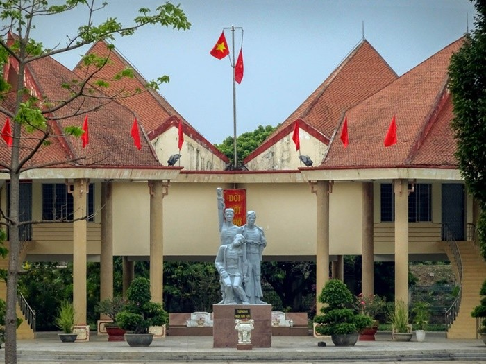
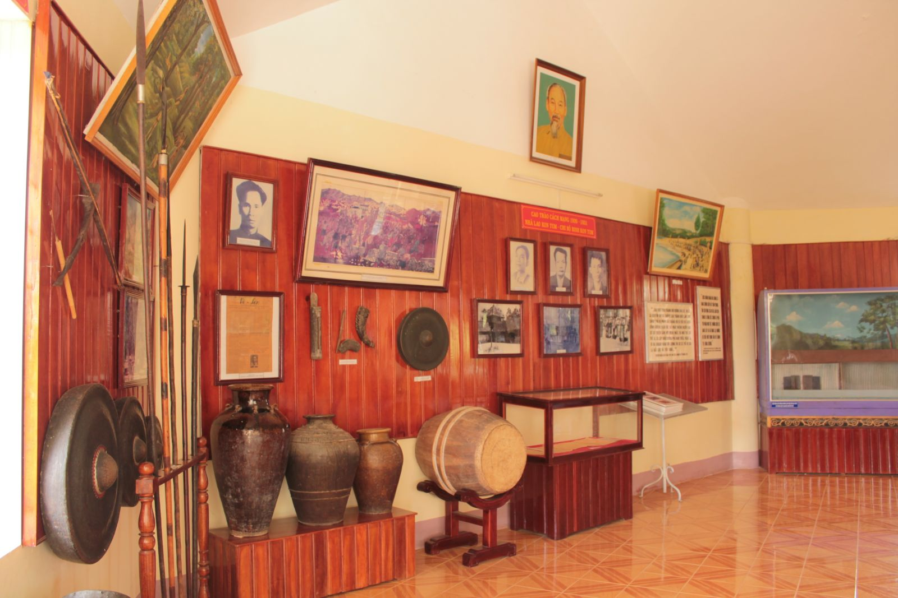
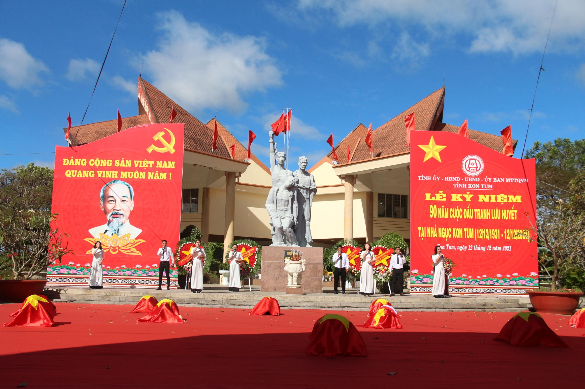
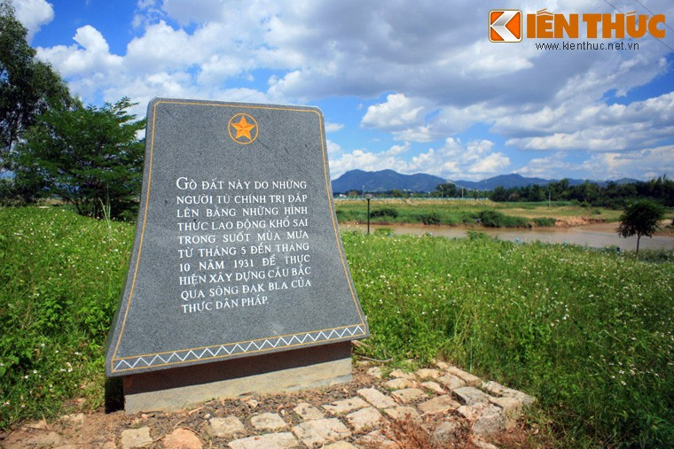
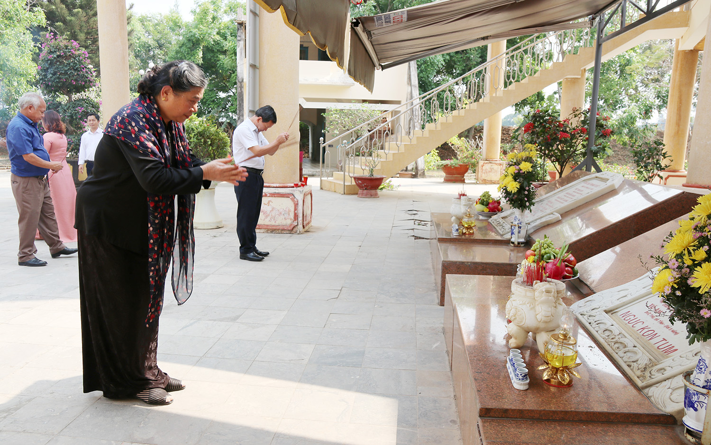
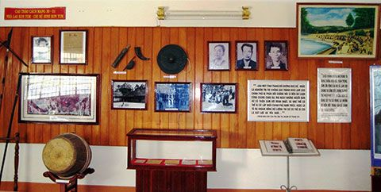
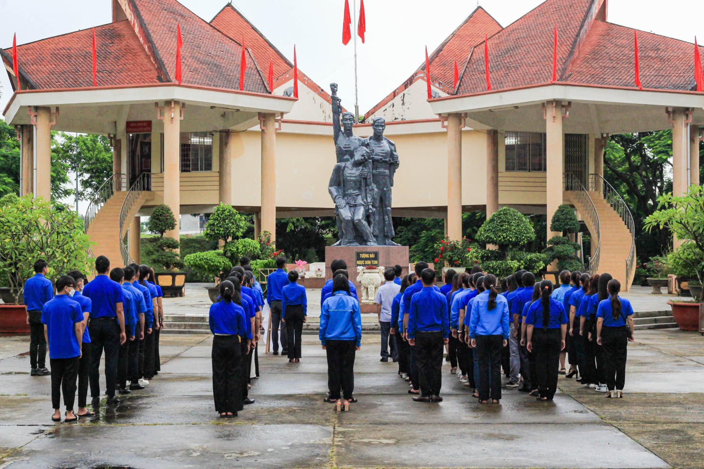
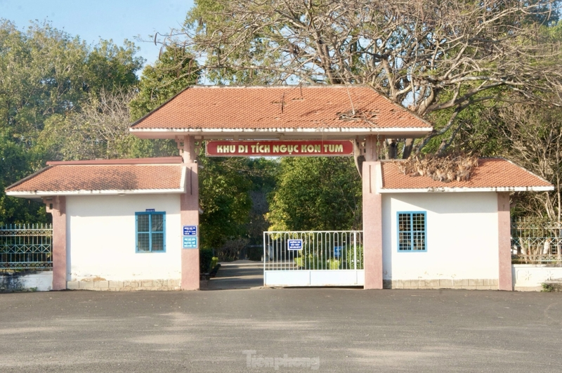

Ngục Kon Tum
Dấu ấn một thời hào hùng dân tộc





Minh chứng lịch sử hào hùng
Một số thông tin:
- Phía bắc sông Đắk Bla, trên đường Trương Quang Trọng, phường Quyết Thắng, thành phố Kon Tum..
- Tại Ngục Kon Tum, tháng 9/1930, chi bộ Đảng Cộng sản đầu tiên của tỉnh Kon Tum được thành lập.
- Thời gian mở cửa tham quan: 7:30 – 11:00 và 1:30 – 5:00 hằng ngày.


Di tích lịch sử văn hóa Quốc gia
Sau tàn tích của chiến tranh, ngày nay di tích chỉ còn lại mộ và bia tưởng niệm của 8 chiến sĩ cách mạng. Ngày 16/11/1988 nơi đây được Bộ Văn hóa, Thể thao và Du lịch công nhận theo Quyết định số 1288/QĐ-BVHTT. Năm 1990, ngục tù Kon Tum được công nhận là khu Di tích lịch sử văn hoá cấp Quốc gia.

